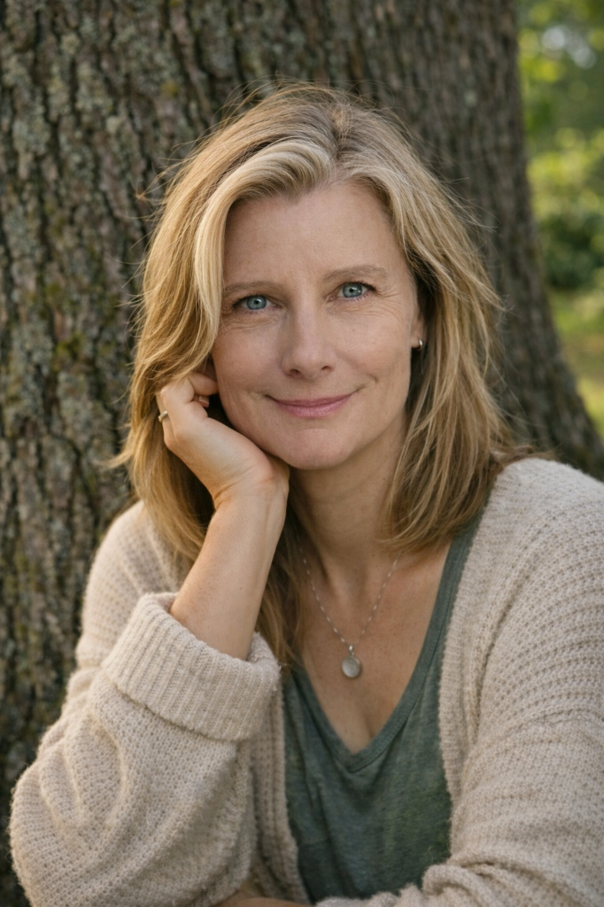
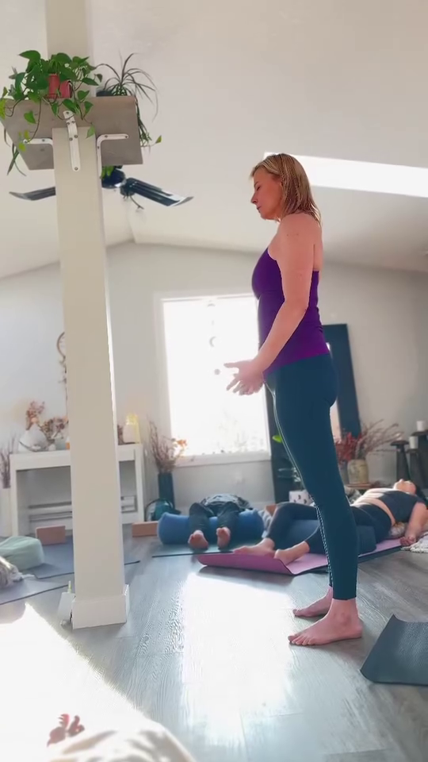

Live now
Livestream classes
Real-time practice from home, guided with the warmth and rhythm of a live room. This summer, the simple rhythm is Tuesday evening and Wednesday morning.
View the schedule Stay Connected
Stay Connected
Somatic yoga and nervous system care
A calm place to listen to your body, soften the struggle, and come home to yourself. Work privately with Laura, practice live online, gather for seasonal workshops, or enter the Sanctuary as it opens this summer.
The practice
This work is not about bending yourself into a better version of you. It is about listening to the body you actually live in, meeting your nervous system with care, and remembering that ease is allowed.
An eight week space for people who have been carrying too much for too long.

This work was created for people who are overwhelmed, exhausted, moving through change, or simply feeling far away from themselves.
There is something powerful about having a quiet, steady space where nothing needs to be performed, rushed, or solved immediately. A place where your body can be listened to, and where you can begin to feel yourself again.
Across your time together, Laura shapes the work around what is present for you. Her many years of teaching yoga, restorative practice, meditation, breathwork, and somatic inquiry allow her to draw from a wide range of practices without forcing you into a predetermined formula. She brings a steady, compassionate presence and listens carefully for what your body may be asking for.
Learn About Private SessionsIf it feels like a possible fit, we can begin with a complimentary conversation. There is no pressure to decide before we have had a chance to talk.
Live now
Real-time practice from home, guided with the warmth and rhythm of a live room. This summer, the simple rhythm is Tuesday evening and Wednesday morning.
View the scheduleThis summer
A private library for recorded classes, meditations, audio reflections, and courses. A quiet place to choose the support that feels right for your body today.
See the visionFocused support
A Quiet Return, The Sacred Journey, and seasonal workshops offer room to explore one meaningful theme with care.
View offeringsThe Sanctuary
Opening July 1, the Sanctuary is a quiet online home for livestream replays, guided classes, meditations, audio reflections, and courses. Come as you are, choose what you need, and let your practice meet the day you are actually having.
Join the Founding ListGentle classes and replays organized by need, mood, and time.
Low-lift, high-value recordings for rest, grounding, and reflection.
A Quiet Return and future programs can be included or sold separately.
Simple pathways that help members choose what they need today.
Summer rhythm
Two weekly livestream classes create a simple, sustainable rhythm for summer.
Tuesday evenings
Wednesday mornings
July 28

Meet Laura
Laura's work is about helping people stop the fight with themselves. Her teaching brings together yoga, somatic practice, mindfulness, and a deeply compassionate understanding of real bodies on real days.
Ask a questionCourse
Three guided embodied reflections for women in their prime. A gentle practice of returning to yourself.
In development
A deeper guided program that can become part of the Sanctuary ecosystem or stand alone as a focused offering.
Stay close